四季の花々
見つけた植物の名前を探すのに苦労していませんか？
中々見ることができない高山植物や身近に咲いている園芸植物まで掲載しています。
掲載種：16
トップ
検索方法
ブログ
お問合せ
2021.01.12
NEWS
No.18 カキドウシを追加しました。
2021.01.10
TOPIC
サイト「四季の花々」オープンしました。
名前検索
季節
全て
春
夏
秋
冬
色
全て
紫色系
青色系
赤色系
桃色系
白色系
黄色系
緑色系
茶色系
黒色系
花びらの枚数
全て
1枚
2枚
3枚
4枚
5枚
6枚以上
花びらの形
全て
唇型
豆型
密集花
検索
2021年01月12日
No.18 カキドウシ
2021年01月11日
No.17 ヒメオドリコソウ
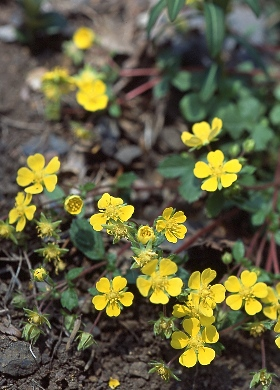
2021年01月11日
No.16 キジムシロ
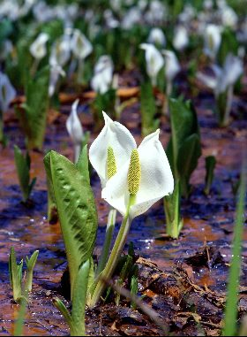
2021年01月10日
No.15 ミズバショウ
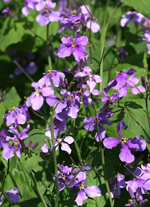
2021年01月10日
No.14 オオアラセイトウ
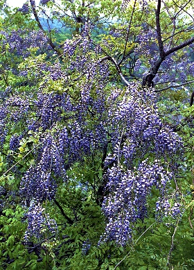
2021年01月10日
No.13 ヤマフジ
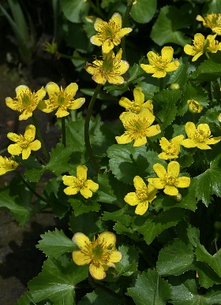
2021年01月10日
No.12 リュウキンカ
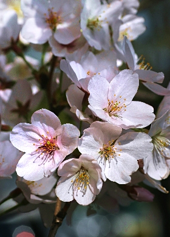
2021年01月10日
No.11 ソメイヨシノ
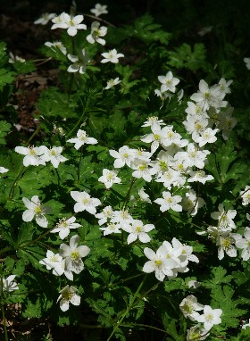
2021年01月10日
No.10 ニリンソウ
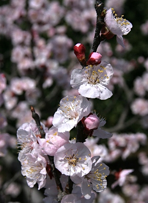
2021年01月10日
No.9 アンズ
2021年01月10日
No.8 ショウジョウバカマ
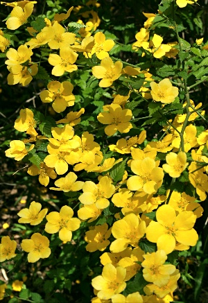
2021年01月10日
No.7 ヤマブキ
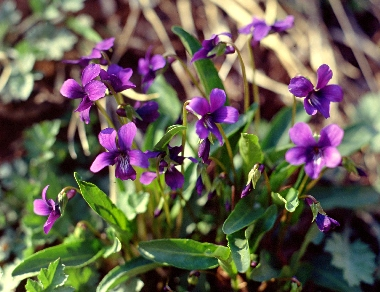
2021年01月10日
No.6 スミレ
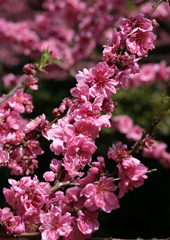
2021年01月10日
No.5 モモ
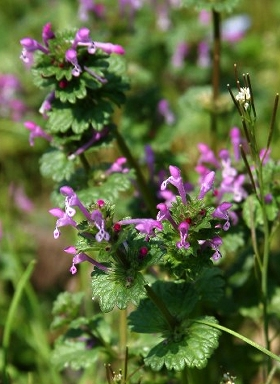
2021年01月10日
No.4 ホトケノザ
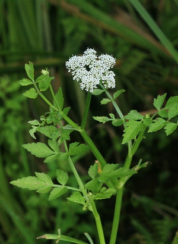
2021年01月09日
No.3 セリ